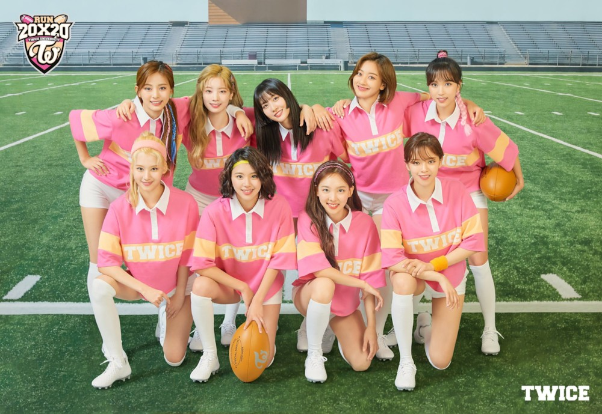

TWICE는 JYP엔터테인먼트에서 2015년에 선보인 9인조 걸그룹이다. 엠넷의 서바이벌 프로그램 SIXTEEN을 통해 나연, 정연, 모모, 사나, 지효, 미나, 다현, 채영, 쯔위(나이 순)가 선발되어 TWICE 멤버로 활동하고 있다. 데뷔년도부터 지금까지 많은 기록들을 세우고 있으며[4], K-POP을 대표하는 그룹 중 최정상급 걸그룹으로 활동하고 있다. 
그룹명인 TWICE는 눈으로 한 번, 귀로 한 번 감동을 준다는 의미로 박진영이 SIXTEEN을 진행하는 동안 지은 이름이다. 브랜드 네이미스트 박재현은 마이 리틀 텔레비전 방송에서 근래 데뷔한 아이돌 중 가장 좋은 팀명이라고 평가했다. 발음적으로 강한 소리가 있어 인식하기 쉽고, 유명한 단어지만 익숙하지는 않아서 신선함을 갖췄다는 평. 애칭은 '트둥이'로, TWICE와 막둥이의 합성어이다.[6] 데뷔 당시 JYP의 막내 그룹이라는 의미로 붙은 애칭이다. T와 W가 연결된 공식 로고는 트와이스 공식 활동 전방면에 사용되고 있다. 공식 SNS계정, 유튜브 채널에서는 매 앨범마다 컨셉 색에 맞게 로고를 업데이트해서 프로필 사진으로 쓰고 있다. 시그니처 사운드는 멤버들이 다 함께 트와이스!라고 외치는 사운드이다.